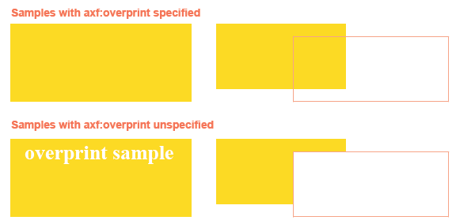

Overprint
Overprint can be specified with -ah-overprint. Overprint is to print one color on top of another when different colors of the objects such as characters and diagram are overlapped and placed. Values which can be set with -ah-overprint include: ‘<color>’ that specifies the color applied to overprint; ‘k100’ that is applied to ‘rgb-icc(#CMYK,0,0,0,1)’; ‘separation’ that is applied to the separation color shown with ‘rgb-icc(#Separation)’; ‘all’ that is applied to all colors; ‘stroke’ that is applied to line drawing; and ‘paint’ that is applied to paint drawing. For details about the features and restrictions, see also -ah-overprint in the Online Manual.
Samples with -ah-overprint specified
In the left sample, rgb-icc(#CMYK, 0, 0, 0, 1.0) and -ah-overprint: k100 are specified to the color of the characters. On the other hand, in the right sample, axf:overprint="rgb-icc(#CMYK, 1.0, 0, 0, 0)" is specified to the top overlapping object (the color is ‘rgb-icc(#CMYK, 1.0, 0, 0, 0)’).
Different result due to overprint setting
The following image indicates that the color of the characters in the left sample above and the color of the top overlapping object in the right samples are specified to be hidden in the preview of the color separation in Adobe Acrobat. In the overprint setting, the one color is printed on top of another; therefore, even when the color of the characters and the color of the top object are set to be hidden, the color of the bottom object will be kept.
